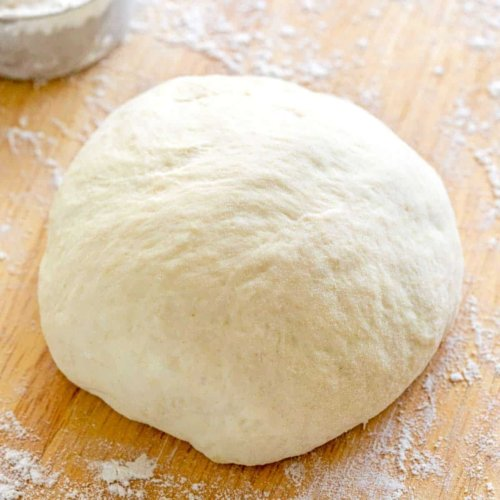

Pizza Dough

Pizza Dough Ball
Regional Types Of Pizza
There are many regional types of pizza in the United States. Several of these types are listed below.
- Chicago "Deep Dish" Style
- New York Style
- Detroit Style
- Quad Cities (my FAVORITE) Style
- A comprehensive list of pizza styles
Bakers Percentages
We will be using "Bakers Percentages" and weighing all of our ingredients that go into our pizza crust.
Unlike cooking, (which is a LOT more forgiving with ingredient amounts), baking should use percise measurements for the ingredients.
The simple reason for weighing everything out is that you may have a bit more (or less) each time you measure with measuring cups or spoons.
Weighing ingredients ensures that each time you have the same amounts each time you make a pizza dough ball.
The other great benefit of using Baker Percentages are that you can scale the recipe size up easily.
My Pizza Crust Recipe
We will be making a thin "cracker" style pizza crust. It has a nice crunch, yet a bit of "chew". I think you will like it!
Ingredients and Percentages
- 100% - Bread Flour - I have had good success with King Arthur brand
- 0.5% - Instant Yeast - I prefer SAF brand Instant Yeast (NOTE: This is NOT "Active" yeast
- 2.0% - Salt - Hain Sea Salt works great - available from many retailers
- 60% - Cold water - Try to avoid "chlorinated" water (This is also know as our "hydration" percentage.)
Tools
- Digital Scale - I have this one (.1g accuracy)
- Mixing bowls - One large, One small (NOT Plastic)
- Plastic bowl scraper - Not totally necessary, but really helpful
- Plastic bag - a produce or grocery bag works well
- Small cutting board
- Serrated knife
- Vegetable/cooking spray
Amounts for Two Personal-sized Pizza's
- Flour - 110 grams
- Yeast - 0.6 grams
- Salt - 2.2 grams
- Water - 60 grams